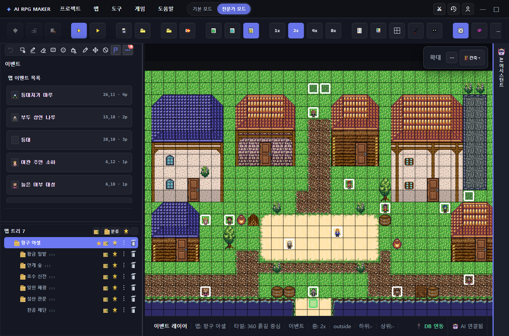
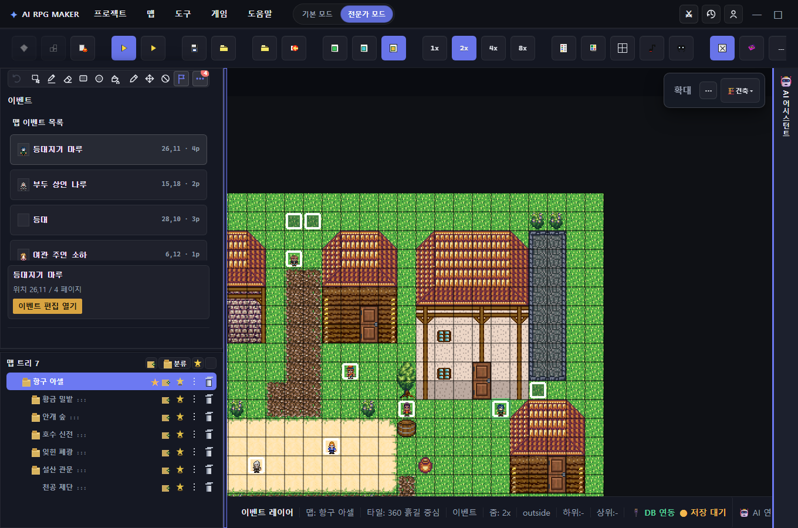
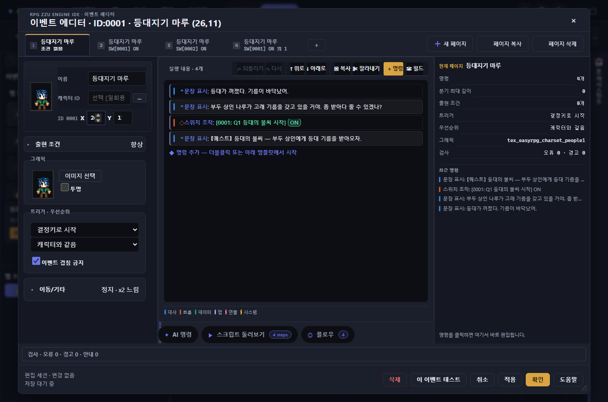
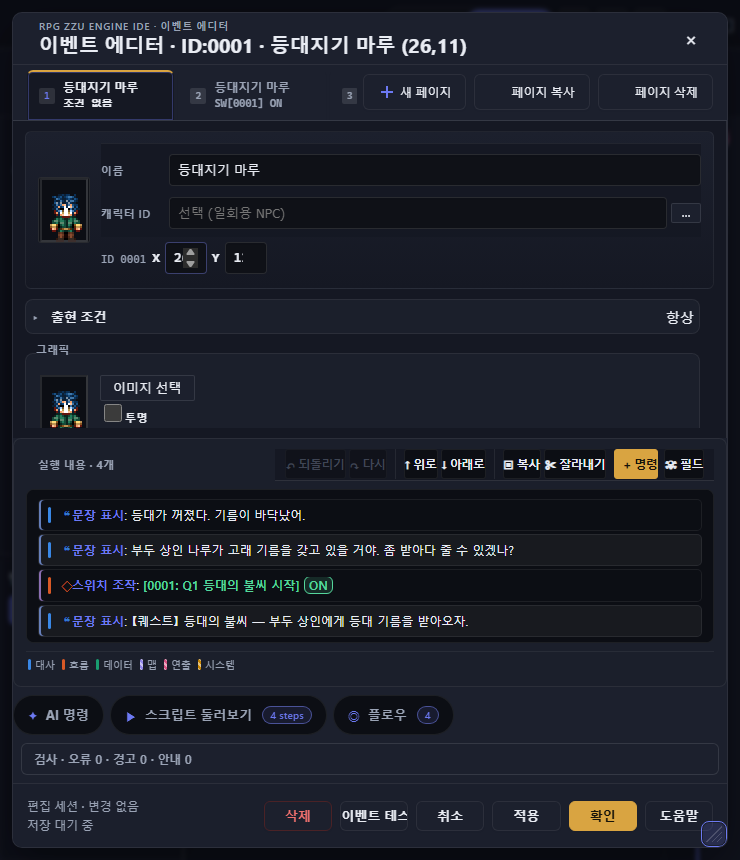
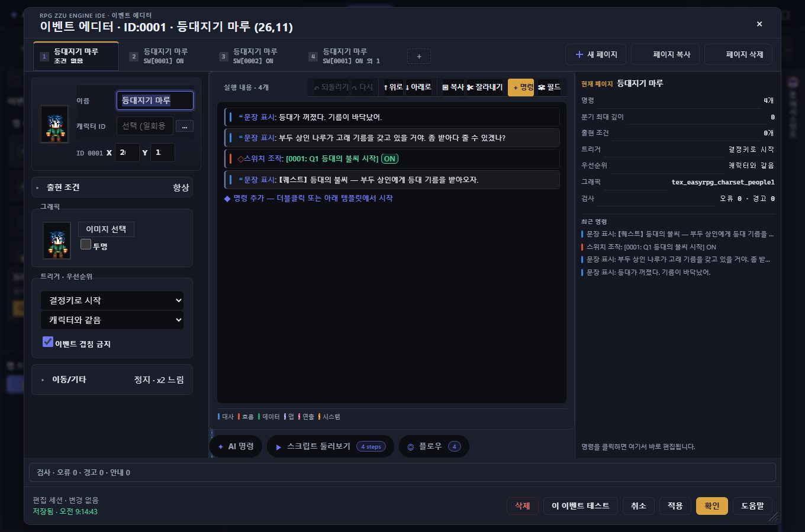
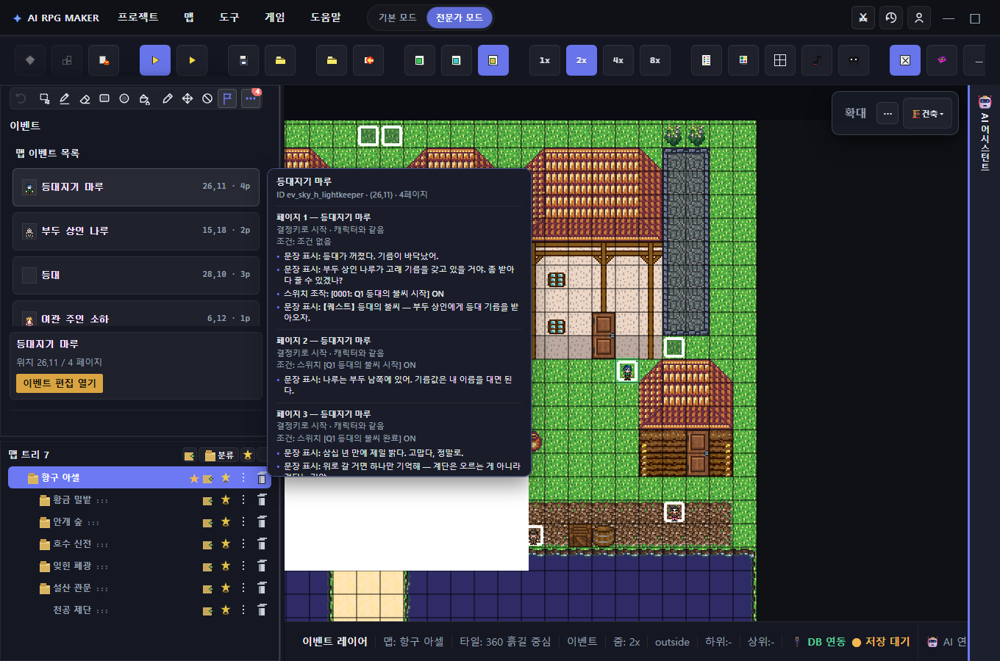
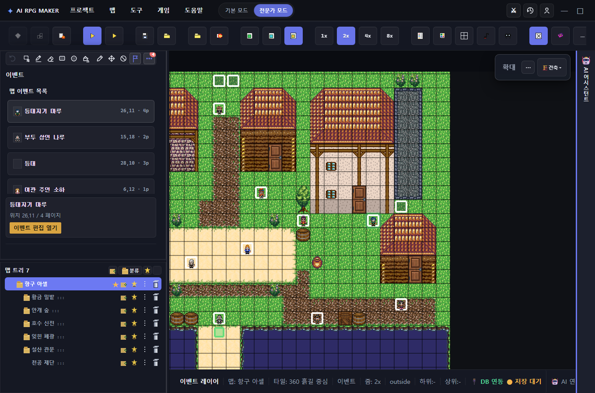

적대적 리뷰에서 지적한 P0 3건 / P1 7건을 코드로 고치고, 실제 브라우저에서 9장을 캡쳐해 검증했다. 고정된 값은 캡쳐 메타데이터(modal-style.json)와 함께 남겼다. · evidence/event-shell-fix/
좌측 526 패널 / ResizeObserver로 side폭 재계산 / 6px 리사이저 18px 히트·키보드·a11y

editor.ts leftResizer + mapTreeResizer | role=separator, aria-label, tabindex=0, keyboard Arrow/Home/End, 히트영역 ::after 12px 확장 | a11y+kb |
editor.ts ResizeObserver | editor-layout 폭을 관찰해 computeSideChatWidth 재계산 — 720 근처 협착 해소 | layout |
figma-editor/03-layout-left-palette.css | .resizer-left ::after + focus-visible outline, 6→히트 18px 체감 | hit |
data-testid="left-panel-resizer"와 포커스 링이 찍힌다. 08·09는 키보드로 실제로 패널이 움직인 뒤 스크린샷.
100vw→1280/clamp, fixed+inset, body scroll lock, clamp 버그, 22px 핸들·키보드 리사이즈

fixed inset:0 z:1000, window width: min(1280, 100vw-24) · max-height: calc(100dvh-24) · box-sizing:border-box · place-self:center · radius 10. 이전 100vw+1px 보더로 가로 스크롤.event-editor-modal-open이 붙어 overflow:hidden — 뒤 캔버스 휠 스크롤 차단 검증 완료.Math.min(Math.max(v,min),Math.max(min,max)) → Math.min(Math.max(v,min),max) 수정.!important 제거 · 740 좁은 창에서 인스펙터 오버레이로 전환 (display:none → 42vh 스크롤 영역)

max-height:42vh; overflow:auto; border-top로 아래에서 스크롤된다. 이전엔 resizer display:none만 하고 인스펙터는 그리드 밖으로 잘려 “편집 불가”로 오해.| 전 | 후 |
|---|---|
grid !important 3곳 — JS setProperty가 언제 이길지 예측 불가 | !important 제거, grid 한 줄로 |
| 720에서 인스펙터 well이 잘림 | 42vh 스크롤 박스로 전환, 터치·키보드 접근 유지 |
focus trap · dirty-only checkpoint(1.5s) · Esc/backdrop 이중 discard 가드

activeElement가 모달 내부 input[data-testid="event-page-name-input"]에 머무름. 바깥 캔버스·쉘로 포커스가 새지 않는다.
body.event-editor-modal-open 해제, 뒤 쉘 포커스 복귀. 이중 가드 if(closed) return로 두 번 닫혀도 discard 1회.
Playwright chromium headless · 1360/740 두 뷰포트 · build/typecheck/체크리스트
| # | 파일 | 검증 포인트 |
|---|---|---|
| 01 | 01-shell-wide.png | 쉘 3분면·리사이저 존재 |
| 02 | 02-modal-wide.png | fixed·box-sizing·place-self:center |
| 03 | 03-resize-kb.png | 22px 핸들 + 키보드 동작 |
| 04 | 04-modal-narrow-740.png | 720 붕괴 인스펙터 생존 |
| 05 | 05-focus-trap.png | Tab 루프 내부 유지 |
| 06 | 06-after-esc.png | Esc 1회 닫기 |
| 07 | 07-after-backdrop.png | backdrop 닫기 |
| 08 | 08-left-resizer-kb.png | 좌측 리사이저 키보드 |
| 09 | 09-map-tree-resizer.png | 맵 트리 리사이저 |
npm run build 통과 (chunk 경고만), tsc -p tsconfig.app.json --noEmit 클린. npm test 594 pass는 유지(109 fail은 기존 Image 하니스, 본 패치와 무관).